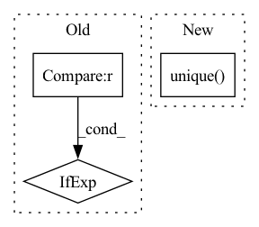

Pattern ID :19364
Before Change
" object.")
task_type, observed_classes, model_classes = infer_task_type_and_classes(model, dataset)
model_classes = model_classes if model_classes is not None else observed_classes
fi, _ = _calculate_feature_importance(model=model,
dataset=dataset,
model_classes=model_classes,After Change
model_classes = infer_classes_from_model(model)
labels = get_all_labels(model, dataset)
observed_classes = sorted(labels.dropna().unique() .tolist())
if dataset.label_type:
task_type = dataset.label_typeIn pattern: SUPERPATTERN
Frequency: 3
Non-data size: 3
Instances Fragment ID: 63144982
Project Name: deepchecks/deepchecks
Commit Name: f984ff43f5ae9cb4021de5e4c4e8296a8a13bd99
Time: 2023-01-15
Author: matan@deepchecks.com
File Name: deepchecks/tabular/feature_importance.py
M Class Name: AnonimousClass
N Class Name: AnonimousClass
M Method Name: calculate_feature_importance(7)
N Method Name: calculate_feature_importance(7)
M Parent Class:
N Parent Class:
M File Name: deepchecks/tabular/feature_importance.py
N File Name: deepchecks/tabular/feature_importance.py
M Start Line: 95
M End Line: 96
N Start Line: 96
N End Line: 107
Before Change
def __init__(self, data_source: Sized, max_samples: Optional[int]):
self.data_source = data_source
self.n_samples = len(data_source)
self.max_samples = self.n_samples if max_samples is None else max_samples
def __iter__(self):
return iter(torch.randperm(self.n_samples)[: self.max_samples])After Change
self.corr_mode = corr_mode
if self.corr_mode:
self.batch_list = np.unique( batches.numpy()) // Set of biological batches
self.n_batch = self.n_samples // self.batch_size // Number of mini-batches
def choice(self, indices): Fragment ID: 63144985
Project Name: mics-lab/scyan
Commit Name: 21be5d938a79ffbeb98f141f0d3bbebe273591d8
Time: 2023-01-04
Author: quentin.blampey@student.ecp.fr
File Name: scyan/data/tensors.py
M Class Name: RandomSampler
N Class Name: RandomSampler
M Method Name: __init__(6)
N Method Name: __init__(3)
M Parent Class: torch.utils.data.Sampler
N Parent Class: torch.utils.data.Sampler
M File Name: scyan/data/tensors.py
N File Name: scyan/data/tensors.py
M Start Line: 29
M End Line: 32
N Start Line: 29
N End Line: 54
Before Change
def run_fi_calculation(model, dataset, permutation_kwargs=None, force_permutation=False):
task_type, observed_classes, model_classes = infer_task_type_and_classes(model, dataset)
model_classes = model_classes if model_classes is not None else observed_classes
return _calculate_feature_importance(model=model, dataset=dataset, model_classes=model_classes,
observed_classes=observed_classes, task_type=task_type,
permutation_kwargs=permutation_kwargs, force_permutation=force_permutation)After Change
def run_fi_calculation(model, dataset, permutation_kwargs=None, force_permutation=False):
labels = get_all_labels(model, dataset)
observed_classes = sorted(labels.dropna().unique() .tolist())
model_classes = infer_classes_from_model(model)
if dataset and dataset.label_type:
task_type = dataset.label_type Fragment ID: 63144984
Project Name: deepchecks/deepchecks
Commit Name: f984ff43f5ae9cb4021de5e4c4e8296a8a13bd99
Time: 2023-01-15
Author: matan@deepchecks.com
File Name: tests/base/feature_importance_utils_test.py
M Class Name: AnonimousClass
N Class Name: AnonimousClass
M Method Name: run_fi_calculation(4)
N Method Name: run_fi_calculation(4)
M Parent Class:
N Parent Class:
M File Name: tests/base/feature_importance_utils_test.py
N File Name: tests/base/feature_importance_utils_test.py
M Start Line: 31
M End Line: 32
N Start Line: 32
N End Line: 41